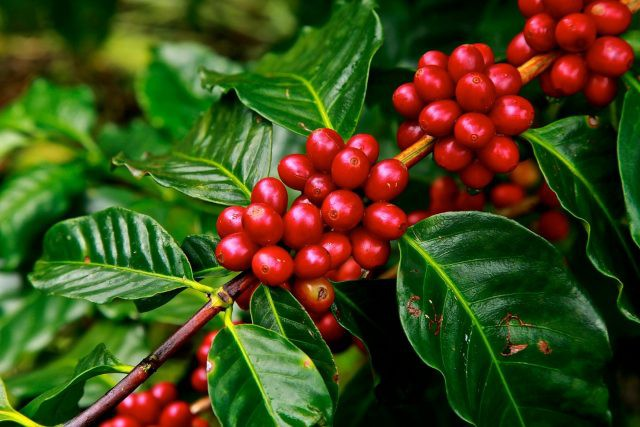

Perkebunan adalah suatu bentuk kegiatan pertanian yang melibatkan pengelolaan dan pemanfaatan lahan secara intensif untuk menanam tanaman komersial seperti kelapa sawit, teh, kopi, karet, dan sebagainya.
Selain sebagai sumber pendapatan ekonomi, perkebunan juga memiliki peran penting dalam menyediakan kebutuhan pangan, bahan baku industri, dan menjaga keseimbangan lingkungan.
Salah satu manfaat utama dari perkebunan adalah memberikan lapangan kerja kepada masyarakat di wilayah perkebunan.
Ribuan petani dan pekerja terlibat dalam aktivitas penanaman, pemeliharaan, panen, dan pengolahan hasil dari perkebunan tersebut.
Dengan demikian, perkebunan berperan sebagai penggerak ekonomi dan meningkatkan taraf hidup masyarakat di sekitarnya.
Selain aspek ekonomi, perkebunan juga berkontribusi terhadap ketahanan pangan. Sebagian besar bahan pangan yang dikonsumsi oleh manusia berasal dari hasil perkebunan seperti biji-bijian, minyak nabati, buah-buahan, dan sayuran.
Perkebunan memainkan peran penting dalam memastikan pasokan pangan yang cukup untuk memenuhi kebutuhan penduduk dunia yang terus bertambah.
HASIL HASIL PERKEBUNAN DAN CARA BUDIDAYANYA
1.KOPI

Budidaya kopi adalah proses menanam dan mengelola tanaman kopi dengan tujuan untuk menghasilkan biji kopi berkualitas. Berikut adalah langkah-langkah umum dalam budidaya kopi:
1. Pemilihan Lokasi:
- Pilihlah lokasi yang memiliki iklim yang cocok untuk pertumbuhan kopi. Biasanya, kopi tumbuh baik di daerah dengan suhu antara 18-25 derajat Celsius.
- Pastikan tanah memiliki drainase yang baik dan kaya akan unsur hara.
- Pertimbangkan juga faktor ketinggian tempat, karena kopi memiliki variasi varietas yang lebih cocok untuk tumbuh di ketinggian tertentu.
2. Persiapan Tanah:
- Lakukan pengolahan tanah dengan membersihkan gulma dan menggemburkan tanah.
- Ameliorasi tanah dengan pemupukan organik untuk meningkatkan kesuburan tanah.
3. Penanaman Bibit:
- Dapatkan bibit kopi berkualitas dari sumber terpercaya.
- Buat lubang tanam dengan jarak yang cukup antara tanaman (tergantung pada varietas kopi yang ditanam).
- Tempatkan bibit kopi dengan hati-hati di lubang tanam dan tutup dengan tanah yang cukup.
4. Pemeliharaan Tanaman:
- Lakukan penyiraman secara teratur terutama pada musim kemarau. Pastikan tanah tetap lembab, tetapi hindari genangan air yang berlebihan.
- Berikan pemupukan secara rutin menggunakan pupuk khusus untuk tanaman kopi.
- Lakukan pemangkasan secara teratur untuk menjaga pertumbuhan tanaman yang baik dan menghindari penyebaran penyakit.
- Kontrol hama dan penyakit dengan menggunakan metode pengendalian yang tepat seperti penggunaan insektisida dan fungisida organik.
5. Panen dan Pengolahan Biji Kopi:
- Tunggu hingga buah kopi matang sepenuhnya sebelum dipanen. Biasanya, buah kopi yang matang memiliki warna merah cerah.
- Pilih metode panen yang sesuai, apakah menggunakan metode selektif (mengambil buah kopi yang matang secara individual) atau metode pemetikan (memetik semua buah kopi sekaligus).
- Setelah dipanen, biji kopi perlu diolah dengan mengupas kulit buah, mengeringkannya, dan membersihkan biji dari sisa-sisa kulit dan daging buah.
6. Pengemasan dan Penjualan:
- Setelah pengolahan biji kopi selesai, kemas biji kopi dalam kemasan yang sesuai untuk menjaga kualitasnya.
- Tentukan target pasar Anda, apakah ingin menjual langsung kepada konsumen atau bekerja sama dengan perusahaan pengolahan kopi.
- Lakukan promosi produk kopi Anda melalui berbagai saluran seperti pameran, toko online, atau kemitraan dengan kafe dan restoran.
TEH
Budidaya teh melibatkan beberapa tahap penting untuk mendapatkan hasil yang baik. Berikut adalah langkah-langkah umum dalam budidaya teh:
1. Pemilihan Tanaman Teh: Pilihlah varietas teh yang sesuai dengan kondisi iklim dan tanah di daerah Anda. Beberapa varietas teh yang umum ditanam adalah Camellia sinensis var.
sinensis (teh Cina) dan Camellia sinensis var. assamica (teh Assam). Tanam bibit teh di lokasi yang mendapatkan sinar matahari yang cukup dan memiliki drainase yang baik.
2. Persiapan Tanah: Persiapkan lahan dengan membersihkan gulma dan memperbaiki struktur tanah. Pupuk organik seperti kompos dapat digunakan untuk meningkatkan kesuburan tanah.
Pastikan pH tanah berada dalam kisaran yang cocok untuk pertumbuhan tanaman teh (biasanya antara 5,5 hingga 6,5).
3. Penanaman Bibit Teh: Tanamlah bibit teh dengan jarak yang cukup antara satu bibit dengan bibit lainnya, biasanya sekitar 1 hingga 1,5 meter.
Pastikan bibit ditanam dengan baik dan akar tertutupi sepenuhnya oleh tanah.
4. Perawatan Tanaman: Berikan penyiraman yang cukup untuk menjaga tanah tetap lembab. Jaga kebersihan area budidaya dengan menghapus gulma secara teratur.
Pemupukan rutin juga penting untuk menyediakan nutrisi yang diperlukan tanaman teh. Gunakan pupuk yang kaya akan nitrogen, fosfor, dan kalium.
5. Pemangkasan dan Pemanenan: Lakukan pemangkasan pada tanaman teh secara teratur untuk merangsang pertumbuhan tunas baru.
Biasanya, pemanenan teh dilakukan ketika daun-daun muda telah mencapai ukuran yang cukup. Petiklah daun-daun muda dengan hati-hati dan hindari merusak tanaman.
6. Pengolahan Daun Teh: Setelah dipanen, daun teh perlu diproses. Proses pengolahan daun teh tergantung pada jenis teh yang ingin Anda hasilkan, seperti teh hitam, teh hijau, atau teh oolong.
Proses umum melibatkan pengeringan, penggulungan, dan fermentasi daun teh.
7. Penyimpanan dan Distribusi: Setelah daun teh diproses, simpan teh dalam wadah yang kedap udara dan simpan di tempat yang sejuk dan kering.
Jika Anda berniat untuk mendistribusikan teh, pastikan teh dikemas dengan baik dan memiliki label yang jelas mengenai jenis dan tanggal kadaluwarsa.